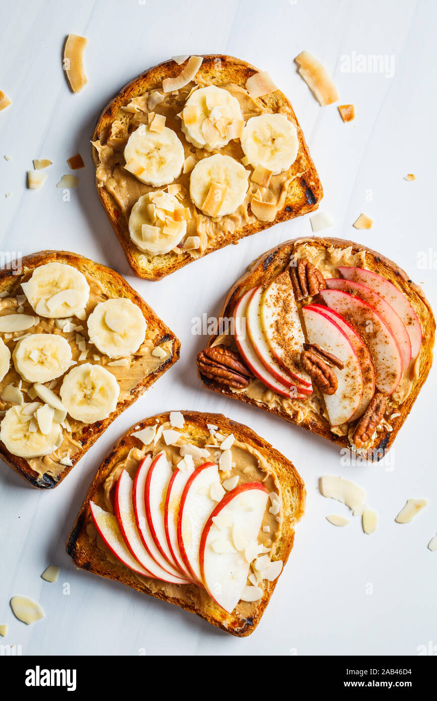

Peanut Butter & Apple Sandwich

Ingredients
- 2 slices of bread (whole wheat works well)
- 2 tablespoons peanut butter, smooth or crunchy
- ½ crisp apple, such as Honeycrisp or Granny Smith
- 1 teaspoon honey (optional)
- A pinch of cinnamon (optional)
Steps
- Toast the bread lightly if you like a little crunch.
- Core the apple half and cut it into thin slices.
- Spread the peanut butter evenly over one side of each slice of bread.
- Layer the apple slices over one peanut-buttered slice.
- Drizzle with honey and sprinkle with cinnamon, if using.
- Top with the second slice, peanut butter side down, press gently, and cut in half.